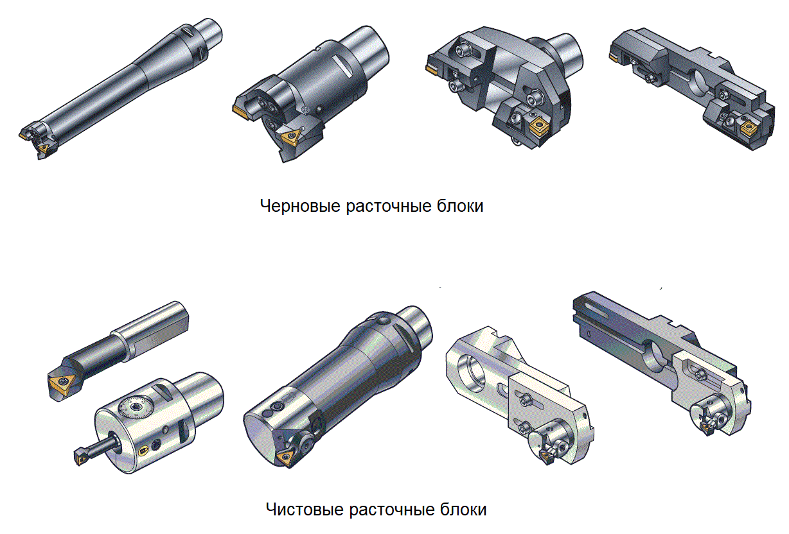

Расточной инструмент обычно представляет собой модульную конструкцию, состоящую из базового держателя, адаптера и режущей головки в виде картриджа, вставки или чистового резца. Чистовая расточная головка, закрепленная на оправке, имеет возможность регулировки в радиальном направлении. Регулировка может осуществляться в определенном диаметральном диапазоне.
В расточных инструментах применяются различные типы пластин в зависимости от вида вставки (ползун, картридж, резец или чистовая расточная головка).
Выбор инструмента для однолезвийной, многолезвийной и ступенчатой обработки отверстий достаточно широк и зависит от конкретных операционных требований. Многозубый инструмент рекомендуется использовать на черновых операциях, а однолезвийный на чистовых.
Выбор сменной пластины также оказывает существенное влияние на конечный результат обработки. Такие характеристики операции растачивания как производительность, надежность и качество напрямую связаны с работоспособностью режущей кромки. Выбранные геометрия и марка сплава пластин определяют формирование стружки, стойкость инструмента и режимы резания.
При любой внутренней обработке остро стоит вопрос об эвакуации стружки из отверстия. Подобно обычным токарным пластинам, для пластин, применяемых в расточных инструментах, определены области удовлетворительного стружкоформирования. Короткая толстая стружка грозит чрезмерными величинами сил резания, которые ведут к возникновению вибраций и отжиму инструмента. Слишком длинная витая стружка будет скапливаться в отверстии и может стать препятствием на пути к низкой шероховатости обрабатываемой поверхности. Или больше того, приведет к пакетированию стружки в отверстии и поломке инструмента. Идеальной считается форма стружки, напоминающая небольшие запятые.
Глубина резания является рекомендованной величиной для каждой геометрии. Пластины с острой режущей кромкой и небольшим радиусом при вершине предназначены для работы с небольшой глубиной резания. Однако необходимо отметить, что увеличение глубины резания способствует улучшенному стружколоманию, так как при обработке с очень маленькими припусками процесс резания напоминает «скобление» материала, сопровождающееся повышенным трением. Причиной неустойчивого стружкоформирования может быть непостоянство величины припуска.
Расточной инструмент рекомендуется использовать при единичном или серийном характере производства. Это позволит обеспечить высокую производительность обработки и широкую универсальность применения благодаря настройке на разные диаметры.